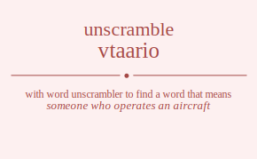

The word found after unscrambling vtaario means that someone who operates an aircraft, .
Wordscapes Daily Puzzle Answers for 06/05/2019
air , art , oar , rat , rot , tar , via , oat , vat , riot , trio , iota , ratio , aorta , aviator

The word found after unscrambling vtaario means that someone who operates an aircraft, .
Wordscapes Daily Puzzle Answers for 06/05/2019
air , art , oar , rat , rot , tar , via , oat , vat , riot , trio , iota , ratio , aorta , aviator
You can also find solutions for different combinations of letters in vtaario like vtaario vtaaroi vtaairo vtaaior vtaaori vtaaoir vtaraio vtaraoi vtariao vtarioa vtaroai vtaroia vtaiaro vtaiaor vtairao vtairoa vtaioar vtaiora vtaoari vtaoair vtaorai vtaoria vtaoiar vtaoira vtaario vtaaroi vtaairo vtaaior vtaaori vtaaoir vtaraio vtaraoi vtariao vtarioa vtaroai vtaroia vtaiaro vtaiaor vtairao vtairoa vtaioar vtaiora vtaoari vtaoair vtaorai vtaoria vtaoiar vtaoira vtraaio vtraaoi vtraiao vtraioa vtraoai vtraoia vtraaio vtraaoi vtraiao vtraioa vtraoai vtraoia vtriaao vtriaoa vtriaao vtriaoa vtrioaa vtrioaa vtroaai vtroaia vtroaai vtroaia vtroiaa vtroiaa vtiaaro vtiaaor vtiarao vtiaroa vtiaoar vtiaora vtiaaro vtiaaor vtiarao vtiaroa vtiaoar vtiaora vtiraao vtiraoa vtiraao vtiraoa vtiroaa vtiroaa vtioaar vtioara vtioaar vtioara vtioraa vtioraa vtoaari vtoaair vtoarai vtoaria vtoaiar vtoaira vtoaari vtoaair vtoarai vtoaria vtoaiar vtoaira vtoraai vtoraia vtoraai vtoraia vtoriaa vtoriaa vtoiaar vtoiara vtoiaar vtoiara vtoiraa vtoiraa vatario vataroi vatairo vataior vataori vataoir vatraio vatraoi vatriao vatrioa vatroai vatroia vatiaro vatiaor vatirao vatiroa vatioar vatiora vatoari vatoair vatorai vatoria vatoiar vatoira vaatrio vaatroi vaatiro vaatior vaatori vaatoir vaartio vaartoi vaarito vaariot vaaroti vaaroit vaaitro vaaitor vaairto vaairot vaaiotr vaaiort vaaotri vaaotir vaaorti vaaorit vaaoitr vaaoirt vartaio vartaoi vartiao vartioa vartoai vartoia varatio varatoi varaito varaiot varaoti varaoit varitao varitoa variato variaot variota varioat varotai varotia varoati varoait varoita varoiat vaitaro vaitaor vaitrao vaitroa vaitoar vaitora vaiatro vaiator vaiarto vaiarot vaiaotr vaiaort vairtao vairtoa vairato vairaot vairota vairoat vaiotar vaiotra vaioatr vaioart vaiorta vaiorat vaotari vaotair vaotrai vaotria vaotiar vaotira vaoatri vaoatir vaoarti vaoarit vaoaitr vaoairt vaortai vaortia vaorati vaorait vaorita vaoriat vaoitar vaoitra vaoiatr vaoiart vaoirta vaoirat vatario vataroi vatairo vataior vataori vataoir vatraio vatraoi vatriao vatrioa vatroai vatroia vatiaro vatiaor vatirao vatiroa vatioar vatiora vatoari vatoair vatorai vatoria vatoiar vatoira vaatrio vaatroi vaatiro vaatior vaatori vaatoir vaartio vaartoi vaarito vaariot vaaroti vaaroit vaaitro vaaitor vaairto vaairot vaaiotr vaaiort vaaotri vaaotir vaaorti vaaorit vaaoitr vaaoirt vartaio vartaoi vartiao vartioa vartoai vartoia varatio varatoi varaito varaiot varaoti varaoit varitao varitoa variato variaot variota varioat varotai varotia varoati varoait varoita varoiat vaitaro vaitaor vaitrao vaitroa vaitoar vaitora vaiatro vaiator vaiarto vaiarot vaiaotr vaiaort vairtao vairtoa vairato vairaot vairota vairoat vaiotar vaiotra vaioatr vaioart vaiorta vaiorat vaotari vaotair vaotrai vaotria vaotiar vaotira vaoatri vaoatir vaoarti vaoarit vaoaitr vaoairt vaortai vaortia vaorati vaorait vaorita vaoriat vaoitar vaoitra vaoiatr vaoiart vaoirta vaoirat vrtaaio vrtaaoi vrtaiao vrtaioa vrtaoai vrtaoia vrtaaio vrtaaoi vrtaiao vrtaioa vrtaoai vrtaoia vrtiaao vrtiaoa vrtiaao vrtiaoa vrtioaa vrtioaa vrtoaai vrtoaia vrtoaai vrtoaia vrtoiaa vrtoiaa vrataio vrataoi vratiao vratioa vratoai vratoia vraatio vraatoi vraaito vraaiot vraaoti vraaoit vraitao vraitoa vraiato vraiaot vraiota vraioat vraotai vraotia vraoati vraoait vraoita vraoiat vrataio vrataoi vratiao vratioa vratoai vratoia vraatio vraatoi vraaito vraaiot vraaoti vraaoit vraitao vraitoa vraiato vraiaot vraiota vraioat vraotai vraotia vraoati vraoait vraoita vraoiat vritaao vritaoa vritaao vritaoa vritoaa vritoaa vriatao vriatoa vriaato vriaaot vriaota vriaoat vriatao vriatoa vriaato vriaaot vriaota vriaoat vriotaa vriotaa vrioata vrioaat vrioata vrioaat vrotaai vrotaia vrotaai vrotaia vrotiaa vrotiaa vroatai vroatia vroaati vroaait vroaita vroaiat vroatai vroatia vroaati vroaait vroaita vroaiat vroitaa vroitaa vroiata vroiaat vroiata vroiaat vitaaro vitaaor vitarao vitaroa vitaoar vitaora vitaaro vitaaor vitarao vitaroa vitaoar vitaora vitraao vitraoa vitraao vitraoa vitroaa vitroaa vitoaar vitoara vitoaar vitoara vitoraa vitoraa viataro viataor viatrao viatroa viatoar viatora viaatro viaator viaarto viaarot viaaotr viaaort viartao viartoa viarato viaraot viarota viaroat viaotar viaotra viaoatr viaoart viaorta viaorat viataro viataor viatrao viatroa viatoar viatora viaatro viaator viaarto viaarot viaaotr viaaort viartao viartoa viarato viaraot viarota viaroat viaotar viaotra viaoatr viaoart viaorta viaorat virtaao virtaoa virtaao virtaoa virtoaa virtoaa viratao viratoa viraato viraaot viraota viraoat viratao viratoa viraato viraaot viraota viraoat virotaa virotaa viroata viroaat viroata viroaat viotaar viotara viotaar viotara viotraa viotraa vioatar vioatra vioaatr vioaart vioarta vioarat vioatar vioatra vioaatr vioaart vioarta vioarat viortaa viortaa viorata vioraat viorata vioraat votaari votaair votarai votaria votaiar votaira votaari votaair votarai votaria votaiar votaira votraai votraia votraai votraia votriaa votriaa votiaar votiara votiaar votiara votiraa votiraa voatari voatair voatrai voatria voatiar voatira voaatri voaatir voaarti voaarit voaaitr voaairt voartai voartia voarati voarait voarita voariat voaitar voaitra voaiatr voaiart voairta voairat voatari voatair voatrai voatria voatiar voatira voaatri voaatir voaarti voaarit voaaitr voaairt voartai voartia voarati voarait voarita voariat voaitar voaitra voaiatr voaiart voairta voairat vortaai vortaia vortaai vortaia vortiaa vortiaa voratai voratia voraati voraait voraita voraiat voratai voratia voraati voraait voraita voraiat voritaa voritaa voriata voriaat voriata voriaat voitaar voitara voitaar voitara voitraa voitraa voiatar voiatra voiaatr voiaart voiarta voiarat voiatar voiatra voiaatr voiaart voiarta voiarat voirtaa voirtaa voirata voiraat voirata voiraat tvaario tvaaroi tvaairo tvaaior tvaaori tvaaoir tvaraio tvaraoi tvariao tvarioa tvaroai tvaroia tvaiaro tvaiaor tvairao tvairoa tvaioar tvaiora tvaoari tvaoair tvaorai tvaoria tvaoiar tvaoira tvaario tvaaroi tvaairo tvaaior tvaaori tvaaoir tvaraio tvaraoi tvariao tvarioa tvaroai tvaroia tvaiaro tvaiaor tvairao tvairoa tvaioar tvaiora tvaoari tvaoair tvaorai tvaoria tvaoiar tvaoira tvraaio tvraaoi tvraiao tvraioa tvraoai tvraoia tvraaio tvraaoi tvraiao tvraioa tvraoai tvraoia tvriaao tvriaoa tvriaao tvriaoa tvrioaa tvrioaa tvroaai tvroaia tvroaai tvroaia tvroiaa tvroiaa tviaaro tviaaor tviarao tviaroa tviaoar tviaora tviaaro tviaaor tviarao tviaroa tviaoar tviaora tviraao tviraoa tviraao tviraoa tviroaa tviroaa tvioaar tvioara tvioaar tvioara tvioraa tvioraa tvoaari tvoaair tvoarai tvoaria tvoaiar tvoaira tvoaari tvoaair tvoarai tvoaria tvoaiar tvoaira tvoraai tvoraia tvoraai tvoraia tvoriaa tvoriaa tvoiaar tvoiara tvoiaar tvoiara tvoiraa tvoiraa tavario tavaroi tavairo tavaior tavaori tavaoir tavraio tavraoi tavriao tavrioa tavroai tavroia taviaro taviaor tavirao taviroa tavioar taviora tavoari tavoair tavorai tavoria tavoiar tavoira taavrio taavroi taaviro taavior taavori taavoir taarvio taarvoi taarivo taariov taarovi taaroiv taaivro taaivor taairvo taairov taaiovr taaiorv taaovri taaovir taaorvi taaoriv taaoivr taaoirv tarvaio tarvaoi tarviao tarvioa tarvoai tarvoia taravio taravoi taraivo taraiov taraovi taraoiv tarivao tarivoa tariavo tariaov tariova tarioav tarovai tarovia taroavi taroaiv taroiva taroiav taivaro taivaor taivrao taivroa taivoar taivora taiavro taiavor taiarvo taiarov taiaovr taiaorv tairvao tairvoa tairavo tairaov tairova tairoav taiovar taiovra taioavr taioarv taiorva taiorav taovari taovair taovrai taovria taoviar taovira taoavri taoavir taoarvi taoariv taoaivr taoairv taorvai taorvia taoravi taoraiv taoriva taoriav taoivar taoivra taoiavr taoiarv taoirva taoirav tavario tavaroi tavairo tavaior tavaori tavaoir tavraio tavraoi tavriao tavrioa tavroai tavroia taviaro taviaor tavirao taviroa tavioar taviora tavoari tavoair tavorai tavoria tavoiar tavoira taavrio taavroi taaviro taavior taavori taavoir taarvio taarvoi taarivo taariov taarovi taaroiv taaivro taaivor taairvo taairov taaiovr taaiorv taaovri taaovir taaorvi taaoriv taaoivr taaoirv tarvaio tarvaoi tarviao tarvioa tarvoai tarvoia taravio taravoi taraivo taraiov taraovi taraoiv tarivao tarivoa tariavo tariaov tariova tarioav tarovai tarovia taroavi taroaiv taroiva taroiav taivaro taivaor taivrao taivroa taivoar taivora taiavro taiavor taiarvo taiarov taiaovr taiaorv tairvao tairvoa tairavo tairaov tairova tairoav taiovar taiovra taioavr taioarv taiorva taiorav taovari taovair taovrai taovria taoviar taovira taoavri taoavir taoarvi taoariv taoaivr taoairv taorvai taorvia taoravi taoraiv taoriva taoriav taoivar taoivra taoiavr taoiarv taoirva taoirav trvaaio trvaaoi trvaiao trvaioa trvaoai trvaoia trvaaio trvaaoi trvaiao trvaioa trvaoai trvaoia trviaao trviaoa trviaao trviaoa trvioaa trvioaa trvoaai trvoaia trvoaai trvoaia trvoiaa trvoiaa travaio travaoi traviao travioa travoai travoia traavio traavoi traaivo traaiov traaovi traaoiv traivao traivoa traiavo traiaov traiova traioav traovai traovia traoavi traoaiv traoiva traoiav travaio travaoi traviao travioa travoai travoia traavio traavoi traaivo traaiov traaovi traaoiv traivao traivoa traiavo traiaov traiova traioav traovai traovia traoavi traoaiv traoiva traoiav trivaao trivaoa trivaao trivaoa trivoaa trivoaa triavao triavoa triaavo triaaov triaova triaoav triavao triavoa triaavo triaaov triaova triaoav triovaa triovaa trioava trioaav trioava trioaav trovaai trovaia trovaai trovaia troviaa troviaa troavai troavia troaavi troaaiv troaiva troaiav troavai troavia troaavi troaaiv troaiva troaiav troivaa troivaa troiava troiaav troiava troiaav tivaaro tivaaor tivarao tivaroa tivaoar tivaora tivaaro tivaaor tivarao tivaroa tivaoar tivaora tivraao tivraoa tivraao tivraoa tivroaa tivroaa tivoaar tivoara tivoaar tivoara tivoraa tivoraa tiavaro tiavaor tiavrao tiavroa tiavoar tiavora tiaavro tiaavor tiaarvo tiaarov tiaaovr tiaaorv tiarvao tiarvoa tiaravo tiaraov tiarova tiaroav tiaovar tiaovra tiaoavr tiaoarv tiaorva tiaorav tiavaro tiavaor tiavrao tiavroa tiavoar tiavora tiaavro tiaavor tiaarvo tiaarov tiaaovr tiaaorv tiarvao tiarvoa tiaravo tiaraov tiarova tiaroav tiaovar tiaovra tiaoavr tiaoarv tiaorva tiaorav tirvaao tirvaoa tirvaao tirvaoa tirvoaa tirvoaa tiravao tiravoa tiraavo tiraaov tiraova tiraoav tiravao tiravoa tiraavo tiraaov tiraova tiraoav tirovaa tirovaa tiroava tiroaav tiroava tiroaav tiovaar tiovara tiovaar tiovara tiovraa tiovraa tioavar tioavra tioaavr tioaarv tioarva tioarav tioavar tioavra tioaavr tioaarv tioarva tioarav tiorvaa tiorvaa tiorava tioraav tiorava tioraav tovaari tovaair tovarai tovaria tovaiar tovaira tovaari tovaair tovarai tovaria tovaiar tovaira tovraai tovraia tovraai tovraia tovriaa tovriaa toviaar toviara toviaar toviara toviraa toviraa toavari toavair toavrai toavria toaviar toavira toaavri toaavir toaarvi toaariv toaaivr toaairv toarvai toarvia toaravi toaraiv toariva toariav toaivar toaivra toaiavr toaiarv toairva toairav toavari toavair toavrai toavria toaviar toavira toaavri toaavir toaarvi toaariv toaaivr toaairv toarvai toarvia toaravi toaraiv toariva toariav toaivar toaivra toaiavr toaiarv toairva toairav torvaai torvaia torvaai torvaia torviaa torviaa toravai toravia toraavi toraaiv toraiva toraiav toravai toravia toraavi toraaiv toraiva toraiav torivaa torivaa toriava toriaav toriava toriaav toivaar toivara toivaar toivara toivraa toivraa toiavar toiavra toiaavr toiaarv toiarva toiarav toiavar toiavra toiaavr toiaarv toiarva toiarav toirvaa toirvaa toirava toiraav toirava toiraav avtario avtaroi avtairo avtaior avtaori avtaoir avtraio avtraoi avtriao avtrioa avtroai avtroia avtiaro avtiaor avtirao avtiroa avtioar avtiora avtoari avtoair avtorai avtoria avtoiar avtoira avatrio avatroi avatiro avatior avatori avatoir avartio avartoi avarito avariot avaroti avaroit avaitro avaitor avairto avairot avaiotr avaiort avaotri avaotir avaorti avaorit avaoitr avaoirt avrtaio avrtaoi avrtiao avrtioa avrtoai avrtoia avratio avratoi avraito avraiot avraoti avraoit avritao avritoa avriato avriaot avriota avrioat avrotai avrotia avroati avroait avroita avroiat avitaro avitaor avitrao avitroa avitoar avitora aviatro aviator aviarto aviarot aviaotr aviaort avirtao avirtoa avirato aviraot avirota aviroat aviotar aviotra avioatr avioart aviorta aviorat avotari avotair avotrai avotria avotiar avotira avoatri avoatir avoarti avoarit avoaitr avoairt avortai avortia avorati avorait avorita avoriat avoitar avoitra avoiatr avoiart avoirta avoirat atvario atvaroi atvairo atvaior atvaori atvaoir atvraio atvraoi atvriao atvrioa atvroai atvroia atviaro atviaor atvirao atviroa atvioar atviora atvoari atvoair atvorai atvoria atvoiar atvoira atavrio atavroi ataviro atavior atavori atavoir atarvio atarvoi atarivo atariov atarovi ataroiv ataivro ataivor atairvo atairov ataiovr ataiorv ataovri ataovir ataorvi ataoriv ataoivr ataoirv atrvaio atrvaoi atrviao atrvioa atrvoai atrvoia atravio atravoi atraivo atraiov atraovi atraoiv atrivao atrivoa atriavo atriaov atriova atrioav atrovai atrovia atroavi atroaiv atroiva atroiav ativaro ativaor ativrao ativroa ativoar ativora atiavro atiavor atiarvo atiarov atiaovr atiaorv atirvao atirvoa atiravo atiraov atirova atiroav atiovar atiovra atioavr atioarv atiorva atiorav atovari atovair atovrai atovria atoviar atovira atoavri atoavir atoarvi atoariv atoaivr atoairv atorvai atorvia atoravi atoraiv atoriva atoriav atoivar atoivra atoiavr atoiarv atoirva atoirav aavtrio aavtroi aavtiro aavtior aavtori aavtoir aavrtio aavrtoi aavrito aavriot aavroti aavroit aavitro aavitor aavirto aavirot aaviotr aaviort aavotri aavotir aavorti aavorit aavoitr aavoirt aatvrio aatvroi aatviro aatvior aatvori aatvoir aatrvio aatrvoi aatrivo aatriov aatrovi aatroiv aativro aativor aatirvo aatirov aatiovr aatiorv aatovri aatovir aatorvi aatoriv aatoivr aatoirv aarvtio aarvtoi aarvito aarviot aarvoti aarvoit aartvio aartvoi aartivo aartiov aartovi aartoiv aarivto aarivot aaritvo aaritov aariovt aariotv aarovti aarovit aarotvi aarotiv aaroivt aaroitv aaivtro aaivtor aaivrto aaivrot aaivotr aaivort aaitvro aaitvor aaitrvo aaitrov aaitovr aaitorv aairvto aairvot aairtvo aairtov aairovt aairotv aaiovtr aaiovrt aaiotvr aaiotrv aaiorvt aaiortv aaovtri aaovtir aaovrti aaovrit aaovitr aaovirt aaotvri aaotvir aaotrvi aaotriv aaotivr aaotirv aaorvti aaorvit aaortvi aaortiv aaorivt aaoritv aaoivtr aaoivrt aaoitvr aaoitrv aaoirvt aaoirtv arvtaio arvtaoi arvtiao arvtioa arvtoai arvtoia arvatio arvatoi arvaito arvaiot arvaoti arvaoit arvitao arvitoa arviato arviaot arviota arvioat arvotai arvotia arvoati arvoait arvoita arvoiat artvaio artvaoi artviao artvioa artvoai artvoia artavio artavoi artaivo artaiov artaovi artaoiv artivao artivoa artiavo artiaov artiova artioav artovai artovia artoavi artoaiv artoiva artoiav aravtio aravtoi aravito araviot aravoti aravoit aratvio aratvoi arativo aratiov aratovi aratoiv araivto araivot araitvo araitov araiovt araiotv araovti araovit araotvi araotiv araoivt araoitv arivtao arivtoa arivato arivaot arivota arivoat aritvao aritvoa aritavo aritaov aritova aritoav ariavto ariavot ariatvo ariatov ariaovt ariaotv ariovta ariovat ariotva ariotav arioavt arioatv arovtai arovtia arovati arovait arovita aroviat arotvai arotvia arotavi arotaiv arotiva arotiav aroavti aroavit aroatvi aroativ aroaivt aroaitv aroivta aroivat aroitva aroitav aroiavt aroiatv aivtaro aivtaor aivtrao aivtroa aivtoar aivtora aivatro aivator aivarto aivarot aivaotr aivaort aivrtao aivrtoa aivrato aivraot aivrota aivroat aivotar aivotra aivoatr aivoart aivorta aivorat aitvaro aitvaor aitvrao aitvroa aitvoar aitvora aitavro aitavor aitarvo aitarov aitaovr aitaorv aitrvao aitrvoa aitravo aitraov aitrova aitroav aitovar aitovra aitoavr aitoarv aitorva aitorav aiavtro aiavtor aiavrto aiavrot aiavotr aiavort aiatvro aiatvor aiatrvo aiatrov aiatovr aiatorv aiarvto aiarvot aiartvo aiartov aiarovt aiarotv aiaovtr aiaovrt aiaotvr aiaotrv aiaorvt aiaortv airvtao airvtoa airvato airvaot airvota airvoat airtvao airtvoa airtavo airtaov airtova airtoav airavto airavot airatvo airatov airaovt airaotv airovta airovat airotva airotav airoavt airoatv aiovtar aiovtra aiovatr aiovart aiovrta aiovrat aiotvar aiotvra aiotavr aiotarv aiotrva aiotrav aioavtr aioavrt aioatvr aioatrv aioarvt aioartv aiorvta aiorvat aiortva aiortav aioravt aioratv aovtari aovtair aovtrai aovtria aovtiar aovtira aovatri aovatir aovarti aovarit aovaitr aovairt aovrtai aovrtia aovrati aovrait aovrita aovriat aovitar aovitra aoviatr aoviart aovirta aovirat aotvari aotvair aotvrai aotvria aotviar aotvira aotavri aotavir aotarvi aotariv aotaivr aotairv aotrvai aotrvia aotravi aotraiv aotriva aotriav aotivar aotivra aotiavr aotiarv aotirva aotirav aoavtri aoavtir aoavrti aoavrit aoavitr aoavirt aoatvri aoatvir aoatrvi aoatriv aoativr aoatirv aoarvti aoarvit aoartvi aoartiv aoarivt aoaritv aoaivtr aoaivrt aoaitvr aoaitrv aoairvt aoairtv aorvtai aorvtia aorvati aorvait aorvita aorviat aortvai aortvia aortavi aortaiv aortiva aortiav aoravti aoravit aoratvi aorativ aoraivt aoraitv aorivta aorivat aoritva aoritav aoriavt aoriatv aoivtar aoivtra aoivatr aoivart aoivrta aoivrat aoitvar aoitvra aoitavr aoitarv aoitrva aoitrav aoiavtr aoiavrt aoiatvr aoiatrv aoiarvt aoiartv aoirvta aoirvat aoirtva aoirtav aoiravt aoiratv avtario avtaroi avtairo avtaior avtaori avtaoir avtraio avtraoi avtriao avtrioa avtroai avtroia avtiaro avtiaor avtirao avtiroa avtioar avtiora avtoari avtoair avtorai avtoria avtoiar avtoira avatrio avatroi avatiro avatior avatori avatoir avartio avartoi avarito avariot avaroti avaroit avaitro avaitor avairto avairot avaiotr avaiort avaotri avaotir avaorti avaorit avaoitr avaoirt avrtaio avrtaoi avrtiao avrtioa avrtoai avrtoia avratio avratoi avraito avraiot avraoti avraoit avritao avritoa avriato avriaot avriota avrioat avrotai avrotia avroati avroait avroita avroiat avitaro avitaor avitrao avitroa avitoar avitora aviatro aviator aviarto aviarot aviaotr aviaort avirtao avirtoa avirato aviraot avirota aviroat aviotar aviotra avioatr avioart aviorta aviorat avotari avotair avotrai avotria avotiar avotira avoatri avoatir avoarti avoarit avoaitr avoairt avortai avortia avorati avorait avorita avoriat avoitar avoitra avoiatr avoiart avoirta avoirat atvario atvaroi atvairo atvaior atvaori atvaoir atvraio atvraoi atvriao atvrioa atvroai atvroia atviaro atviaor atvirao atviroa atvioar atviora atvoari atvoair atvorai atvoria atvoiar atvoira atavrio atavroi ataviro atavior atavori atavoir atarvio atarvoi atarivo atariov atarovi ataroiv ataivro ataivor atairvo atairov ataiovr ataiorv ataovri ataovir ataorvi ataoriv ataoivr ataoirv atrvaio atrvaoi atrviao atrvioa atrvoai atrvoia atravio atravoi atraivo atraiov atraovi atraoiv atrivao atrivoa atriavo atriaov atriova atrioav atrovai atrovia atroavi atroaiv atroiva atroiav ativaro ativaor ativrao ativroa ativoar ativora atiavro atiavor atiarvo atiarov atiaovr atiaorv atirvao atirvoa atiravo atiraov atirova atiroav atiovar atiovra atioavr atioarv atiorva atiorav atovari atovair atovrai atovria atoviar atovira atoavri atoavir atoarvi atoariv atoaivr atoairv atorvai atorvia atoravi atoraiv atoriva atoriav atoivar atoivra atoiavr atoiarv atoirva atoirav aavtrio aavtroi aavtiro aavtior aavtori aavtoir aavrtio aavrtoi aavrito aavriot aavroti aavroit aavitro aavitor aavirto aavirot aaviotr aaviort aavotri aavotir aavorti aavorit aavoitr aavoirt aatvrio aatvroi aatviro aatvior aatvori aatvoir aatrvio aatrvoi aatrivo aatriov aatrovi aatroiv aativro aativor aatirvo aatirov aatiovr aatiorv aatovri aatovir aatorvi aatoriv aatoivr aatoirv aarvtio aarvtoi aarvito aarviot aarvoti aarvoit aartvio aartvoi aartivo aartiov aartovi aartoiv aarivto aarivot aaritvo aaritov aariovt aariotv aarovti aarovit aarotvi aarotiv aaroivt aaroitv aaivtro aaivtor aaivrto aaivrot aaivotr aaivort aaitvro aaitvor aaitrvo aaitrov aaitovr aaitorv aairvto aairvot aairtvo aairtov aairovt aairotv aaiovtr aaiovrt aaiotvr aaiotrv aaiorvt aaiortv aaovtri aaovtir aaovrti aaovrit aaovitr aaovirt aaotvri aaotvir aaotrvi aaotriv aaotivr aaotirv aaorvti aaorvit aaortvi aaortiv aaorivt aaoritv aaoivtr aaoivrt aaoitvr aaoitrv aaoirvt aaoirtv arvtaio arvtaoi arvtiao arvtioa arvtoai arvtoia arvatio arvatoi arvaito arvaiot arvaoti arvaoit arvitao arvitoa arviato arviaot arviota arvioat arvotai arvotia arvoati arvoait arvoita arvoiat artvaio artvaoi artviao artvioa artvoai artvoia artavio artavoi artaivo artaiov artaovi artaoiv artivao artivoa artiavo artiaov artiova artioav artovai artovia artoavi artoaiv artoiva artoiav aravtio aravtoi aravito araviot aravoti aravoit aratvio aratvoi arativo aratiov aratovi aratoiv araivto araivot araitvo araitov araiovt araiotv araovti araovit araotvi araotiv araoivt araoitv arivtao arivtoa arivato arivaot arivota arivoat aritvao aritvoa aritavo aritaov aritova aritoav ariavto ariavot ariatvo ariatov ariaovt ariaotv ariovta ariovat ariotva ariotav arioavt arioatv arovtai arovtia arovati arovait arovita aroviat arotvai arotvia arotavi arotaiv arotiva arotiav aroavti aroavit aroatvi aroativ aroaivt aroaitv aroivta aroivat aroitva aroitav aroiavt aroiatv aivtaro aivtaor aivtrao aivtroa aivtoar aivtora aivatro aivator aivarto aivarot aivaotr aivaort aivrtao aivrtoa aivrato aivraot aivrota aivroat aivotar aivotra aivoatr aivoart aivorta aivorat aitvaro aitvaor aitvrao aitvroa aitvoar aitvora aitavro aitavor aitarvo aitarov aitaovr aitaorv aitrvao aitrvoa aitravo aitraov aitrova aitroav aitovar aitovra aitoavr aitoarv aitorva aitorav aiavtro aiavtor aiavrto aiavrot aiavotr aiavort aiatvro aiatvor aiatrvo aiatrov aiatovr aiatorv aiarvto aiarvot aiartvo aiartov aiarovt aiarotv aiaovtr aiaovrt aiaotvr aiaotrv aiaorvt aiaortv airvtao airvtoa airvato airvaot airvota airvoat airtvao airtvoa airtavo airtaov airtova airtoav airavto airavot airatvo airatov airaovt airaotv airovta airovat airotva airotav airoavt airoatv aiovtar aiovtra aiovatr aiovart aiovrta aiovrat aiotvar aiotvra aiotavr aiotarv aiotrva aiotrav aioavtr aioavrt aioatvr aioatrv aioarvt aioartv aiorvta aiorvat aiortva aiortav aioravt aioratv aovtari aovtair aovtrai aovtria aovtiar aovtira aovatri aovatir aovarti aovarit aovaitr aovairt aovrtai aovrtia aovrati aovrait aovrita aovriat aovitar aovitra aoviatr aoviart aovirta aovirat aotvari aotvair aotvrai aotvria aotviar aotvira aotavri aotavir aotarvi aotariv aotaivr aotairv aotrvai aotrvia aotravi aotraiv aotriva aotriav aotivar aotivra aotiavr aotiarv aotirva aotirav aoavtri aoavtir aoavrti aoavrit aoavitr aoavirt aoatvri aoatvir aoatrvi aoatriv aoativr aoatirv aoarvti aoarvit aoartvi aoartiv aoarivt aoaritv aoaivtr aoaivrt aoaitvr aoaitrv aoairvt aoairtv aorvtai aorvtia aorvati aorvait aorvita aorviat aortvai aortvia aortavi aortaiv aortiva aortiav aoravti aoravit aoratvi aorativ aoraivt aoraitv aorivta aorivat aoritva aoritav aoriavt aoriatv aoivtar aoivtra aoivatr aoivart aoivrta aoivrat aoitvar aoitvra aoitavr aoitarv aoitrva aoitrav aoiavtr aoiavrt aoiatvr aoiatrv aoiarvt aoiartv aoirvta aoirvat aoirtva aoirtav aoiravt aoiratv rvtaaio rvtaaoi rvtaiao rvtaioa rvtaoai rvtaoia rvtaaio rvtaaoi rvtaiao rvtaioa rvtaoai rvtaoia rvtiaao rvtiaoa rvtiaao rvtiaoa rvtioaa rvtioaa rvtoaai rvtoaia rvtoaai rvtoaia rvtoiaa rvtoiaa rvataio rvataoi rvatiao rvatioa rvatoai rvatoia rvaatio rvaatoi rvaaito rvaaiot rvaaoti rvaaoit rvaitao rvaitoa rvaiato rvaiaot rvaiota rvaioat rvaotai rvaotia rvaoati rvaoait rvaoita rvaoiat rvataio rvataoi rvatiao rvatioa rvatoai rvatoia rvaatio rvaatoi rvaaito rvaaiot rvaaoti rvaaoit rvaitao rvaitoa rvaiato rvaiaot rvaiota rvaioat rvaotai rvaotia rvaoati rvaoait rvaoita rvaoiat rvitaao rvitaoa rvitaao rvitaoa rvitoaa rvitoaa rviatao rviatoa rviaato rviaaot rviaota rviaoat rviatao rviatoa rviaato rviaaot rviaota rviaoat rviotaa rviotaa rvioata rvioaat rvioata rvioaat rvotaai rvotaia rvotaai rvotaia rvotiaa rvotiaa rvoatai rvoatia rvoaati rvoaait rvoaita rvoaiat rvoatai rvoatia rvoaati rvoaait rvoaita rvoaiat rvoitaa rvoitaa rvoiata rvoiaat rvoiata rvoiaat rtvaaio rtvaaoi rtvaiao rtvaioa rtvaoai rtvaoia rtvaaio rtvaaoi rtvaiao rtvaioa rtvaoai rtvaoia rtviaao rtviaoa rtviaao rtviaoa rtvioaa rtvioaa rtvoaai rtvoaia rtvoaai rtvoaia rtvoiaa rtvoiaa rtavaio rtavaoi rtaviao rtavioa rtavoai rtavoia rtaavio rtaavoi rtaaivo rtaaiov rtaaovi rtaaoiv rtaivao rtaivoa rtaiavo rtaiaov rtaiova rtaioav rtaovai rtaovia rtaoavi rtaoaiv rtaoiva rtaoiav rtavaio rtavaoi rtaviao rtavioa rtavoai rtavoia rtaavio rtaavoi rtaaivo rtaaiov rtaaovi rtaaoiv rtaivao rtaivoa rtaiavo rtaiaov rtaiova rtaioav rtaovai rtaovia rtaoavi rtaoaiv rtaoiva rtaoiav rtivaao rtivaoa rtivaao rtivaoa rtivoaa rtivoaa rtiavao rtiavoa rtiaavo rtiaaov rtiaova rtiaoav rtiavao rtiavoa rtiaavo rtiaaov rtiaova rtiaoav rtiovaa rtiovaa rtioava rtioaav rtioava rtioaav rtovaai rtovaia rtovaai rtovaia rtoviaa rtoviaa rtoavai rtoavia rtoaavi rtoaaiv rtoaiva rtoaiav rtoavai rtoavia rtoaavi rtoaaiv rtoaiva rtoaiav rtoivaa rtoivaa rtoiava rtoiaav rtoiava rtoiaav ravtaio ravtaoi ravtiao ravtioa ravtoai ravtoia ravatio ravatoi ravaito ravaiot ravaoti ravaoit ravitao ravitoa raviato raviaot raviota ravioat ravotai ravotia ravoati ravoait ravoita ravoiat ratvaio ratvaoi ratviao ratvioa ratvoai ratvoia ratavio ratavoi rataivo rataiov rataovi rataoiv rativao rativoa ratiavo ratiaov ratiova ratioav ratovai ratovia ratoavi ratoaiv ratoiva ratoiav raavtio raavtoi raavito raaviot raavoti raavoit raatvio raatvoi raativo raatiov raatovi raatoiv raaivto raaivot raaitvo raaitov raaiovt raaiotv raaovti raaovit raaotvi raaotiv raaoivt raaoitv raivtao raivtoa raivato raivaot raivota raivoat raitvao raitvoa raitavo raitaov raitova raitoav raiavto raiavot raiatvo raiatov raiaovt raiaotv raiovta raiovat raiotva raiotav raioavt raioatv raovtai raovtia raovati raovait raovita raoviat raotvai raotvia raotavi raotaiv raotiva raotiav raoavti raoavit raoatvi raoativ raoaivt raoaitv raoivta raoivat raoitva raoitav raoiavt raoiatv ravtaio ravtaoi ravtiao ravtioa ravtoai ravtoia ravatio ravatoi ravaito ravaiot ravaoti ravaoit ravitao ravitoa raviato raviaot raviota ravioat ravotai ravotia ravoati ravoait ravoita ravoiat ratvaio ratvaoi ratviao ratvioa ratvoai ratvoia ratavio ratavoi rataivo rataiov rataovi rataoiv rativao rativoa ratiavo ratiaov ratiova ratioav ratovai ratovia ratoavi ratoaiv ratoiva ratoiav raavtio raavtoi raavito raaviot raavoti raavoit raatvio raatvoi raativo raatiov raatovi raatoiv raaivto raaivot raaitvo raaitov raaiovt raaiotv raaovti raaovit raaotvi raaotiv raaoivt raaoitv raivtao raivtoa raivato raivaot raivota raivoat raitvao raitvoa raitavo raitaov raitova raitoav raiavto raiavot raiatvo raiatov raiaovt raiaotv raiovta raiovat raiotva raiotav raioavt raioatv raovtai raovtia raovati raovait raovita raoviat raotvai raotvia raotavi raotaiv raotiva raotiav raoavti raoavit raoatvi raoativ raoaivt raoaitv raoivta raoivat raoitva raoitav raoiavt raoiatv rivtaao rivtaoa rivtaao rivtaoa rivtoaa rivtoaa rivatao rivatoa rivaato rivaaot rivaota rivaoat rivatao rivatoa rivaato rivaaot rivaota rivaoat rivotaa rivotaa rivoata rivoaat rivoata rivoaat ritvaao ritvaoa ritvaao ritvaoa ritvoaa ritvoaa ritavao ritavoa ritaavo ritaaov ritaova ritaoav ritavao ritavoa ritaavo ritaaov ritaova ritaoav ritovaa ritovaa ritoava ritoaav ritoava ritoaav riavtao riavtoa riavato riavaot riavota riavoat riatvao riatvoa riatavo riataov riatova riatoav riaavto riaavot riaatvo riaatov riaaovt riaaotv riaovta riaovat riaotva riaotav riaoavt riaoatv riavtao riavtoa riavato riavaot riavota riavoat riatvao riatvoa riatavo riataov riatova riatoav riaavto riaavot riaatvo riaatov riaaovt riaaotv riaovta riaovat riaotva riaotav riaoavt riaoatv riovtaa riovtaa riovata riovaat riovata riovaat riotvaa riotvaa riotava riotaav riotava riotaav rioavta rioavat rioatva rioatav rioaavt rioaatv rioavta rioavat rioatva rioatav rioaavt rioaatv rovtaai rovtaia rovtaai rovtaia rovtiaa rovtiaa rovatai rovatia rovaati rovaait rovaita rovaiat rovatai rovatia rovaati rovaait rovaita rovaiat rovitaa rovitaa roviata roviaat roviata roviaat rotvaai rotvaia rotvaai rotvaia rotviaa rotviaa rotavai rotavia rotaavi rotaaiv rotaiva rotaiav rotavai rotavia rotaavi rotaaiv rotaiva rotaiav rotivaa rotivaa rotiava rotiaav rotiava rotiaav roavtai roavtia roavati roavait roavita roaviat roatvai roatvia roatavi roataiv roativa roatiav roaavti roaavit roaatvi roaativ roaaivt roaaitv roaivta roaivat roaitva roaitav roaiavt roaiatv roavtai roavtia roavati roavait roavita roaviat roatvai roatvia roatavi roataiv roativa roatiav roaavti roaavit roaatvi roaativ roaaivt roaaitv roaivta roaivat roaitva roaitav roaiavt roaiatv roivtaa roivtaa roivata roivaat roivata roivaat roitvaa roitvaa roitava roitaav roitava roitaav roiavta roiavat roiatva roiatav roiaavt roiaatv roiavta roiavat roiatva roiatav roiaavt roiaatv ivtaaro ivtaaor ivtarao ivtaroa ivtaoar ivtaora ivtaaro ivtaaor ivtarao ivtaroa ivtaoar ivtaora ivtraao ivtraoa ivtraao ivtraoa ivtroaa ivtroaa ivtoaar ivtoara ivtoaar ivtoara ivtoraa ivtoraa ivataro ivataor ivatrao ivatroa ivatoar ivatora ivaatro ivaator ivaarto ivaarot ivaaotr ivaaort ivartao ivartoa ivarato ivaraot ivarota ivaroat ivaotar ivaotra ivaoatr ivaoart ivaorta ivaorat ivataro ivataor ivatrao ivatroa ivatoar ivatora ivaatro ivaator ivaarto ivaarot ivaaotr ivaaort ivartao ivartoa ivarato ivaraot ivarota ivaroat ivaotar ivaotra ivaoatr ivaoart ivaorta ivaorat ivrtaao ivrtaoa ivrtaao ivrtaoa ivrtoaa ivrtoaa ivratao ivratoa ivraato ivraaot ivraota ivraoat ivratao ivratoa ivraato ivraaot ivraota ivraoat ivrotaa ivrotaa ivroata ivroaat ivroata ivroaat ivotaar ivotara ivotaar ivotara ivotraa ivotraa ivoatar ivoatra ivoaatr ivoaart ivoarta ivoarat ivoatar ivoatra ivoaatr ivoaart ivoarta ivoarat ivortaa ivortaa ivorata ivoraat ivorata ivoraat itvaaro itvaaor itvarao itvaroa itvaoar itvaora itvaaro itvaaor itvarao itvaroa itvaoar itvaora itvraao itvraoa itvraao itvraoa itvroaa itvroaa itvoaar itvoara itvoaar itvoara itvoraa itvoraa itavaro itavaor itavrao itavroa itavoar itavora itaavro itaavor itaarvo itaarov itaaovr itaaorv itarvao itarvoa itaravo itaraov itarova itaroav itaovar itaovra itaoavr itaoarv itaorva itaorav itavaro itavaor itavrao itavroa itavoar itavora itaavro itaavor itaarvo itaarov itaaovr itaaorv itarvao itarvoa itaravo itaraov itarova itaroav itaovar itaovra itaoavr itaoarv itaorva itaorav itrvaao itrvaoa itrvaao itrvaoa itrvoaa itrvoaa itravao itravoa itraavo itraaov itraova itraoav itravao itravoa itraavo itraaov itraova itraoav itrovaa itrovaa itroava itroaav itroava itroaav itovaar itovara itovaar itovara itovraa itovraa itoavar itoavra itoaavr itoaarv itoarva itoarav itoavar itoavra itoaavr itoaarv itoarva itoarav itorvaa itorvaa itorava itoraav itorava itoraav iavtaro iavtaor iavtrao iavtroa iavtoar iavtora iavatro iavator iavarto iavarot iavaotr iavaort iavrtao iavrtoa iavrato iavraot iavrota iavroat iavotar iavotra iavoatr iavoart iavorta iavorat iatvaro iatvaor iatvrao iatvroa iatvoar iatvora iatavro iatavor iatarvo iatarov iataovr iataorv iatrvao iatrvoa iatravo iatraov iatrova iatroav iatovar iatovra iatoavr iatoarv iatorva iatorav iaavtro iaavtor iaavrto iaavrot iaavotr iaavort iaatvro iaatvor iaatrvo iaatrov iaatovr iaatorv iaarvto iaarvot iaartvo iaartov iaarovt iaarotv iaaovtr iaaovrt iaaotvr iaaotrv iaaorvt iaaortv iarvtao iarvtoa iarvato iarvaot iarvota iarvoat iartvao iartvoa iartavo iartaov iartova iartoav iaravto iaravot iaratvo iaratov iaraovt iaraotv iarovta iarovat iarotva iarotav iaroavt iaroatv iaovtar iaovtra iaovatr iaovart iaovrta iaovrat iaotvar iaotvra iaotavr iaotarv iaotrva iaotrav iaoavtr iaoavrt iaoatvr iaoatrv iaoarvt iaoartv iaorvta iaorvat iaortva iaortav iaoravt iaoratv iavtaro iavtaor iavtrao iavtroa iavtoar iavtora iavatro iavator iavarto iavarot iavaotr iavaort iavrtao iavrtoa iavrato iavraot iavrota iavroat iavotar iavotra iavoatr iavoart iavorta iavorat iatvaro iatvaor iatvrao iatvroa iatvoar iatvora iatavro iatavor iatarvo iatarov iataovr iataorv iatrvao iatrvoa iatravo iatraov iatrova iatroav iatovar iatovra iatoavr iatoarv iatorva iatorav iaavtro iaavtor iaavrto iaavrot iaavotr iaavort iaatvro iaatvor iaatrvo iaatrov iaatovr iaatorv iaarvto iaarvot iaartvo iaartov iaarovt iaarotv iaaovtr iaaovrt iaaotvr iaaotrv iaaorvt iaaortv iarvtao iarvtoa iarvato iarvaot iarvota iarvoat iartvao iartvoa iartavo iartaov iartova iartoav iaravto iaravot iaratvo iaratov iaraovt iaraotv iarovta iarovat iarotva iarotav iaroavt iaroatv iaovtar iaovtra iaovatr iaovart iaovrta iaovrat iaotvar iaotvra iaotavr iaotarv iaotrva iaotrav iaoavtr iaoavrt iaoatvr iaoatrv iaoarvt iaoartv iaorvta iaorvat iaortva iaortav iaoravt iaoratv irvtaao irvtaoa irvtaao irvtaoa irvtoaa irvtoaa irvatao irvatoa irvaato irvaaot irvaota irvaoat irvatao irvatoa irvaato irvaaot irvaota irvaoat irvotaa irvotaa irvoata irvoaat irvoata irvoaat irtvaao irtvaoa irtvaao irtvaoa irtvoaa irtvoaa irtavao irtavoa irtaavo irtaaov irtaova irtaoav irtavao irtavoa irtaavo irtaaov irtaova irtaoav irtovaa irtovaa irtoava irtoaav irtoava irtoaav iravtao iravtoa iravato iravaot iravota iravoat iratvao iratvoa iratavo irataov iratova iratoav iraavto iraavot iraatvo iraatov iraaovt iraaotv iraovta iraovat iraotva iraotav iraoavt iraoatv iravtao iravtoa iravato iravaot iravota iravoat iratvao iratvoa iratavo irataov iratova iratoav iraavto iraavot iraatvo iraatov iraaovt iraaotv iraovta iraovat iraotva iraotav iraoavt iraoatv irovtaa irovtaa irovata irovaat irovata irovaat irotvaa irotvaa irotava irotaav irotava irotaav iroavta iroavat iroatva iroatav iroaavt iroaatv iroavta iroavat iroatva iroatav iroaavt iroaatv iovtaar iovtara iovtaar iovtara iovtraa iovtraa iovatar iovatra iovaatr iovaart iovarta iovarat iovatar iovatra iovaatr iovaart iovarta iovarat iovrtaa iovrtaa iovrata iovraat iovrata iovraat iotvaar iotvara iotvaar iotvara iotvraa iotvraa iotavar iotavra iotaavr iotaarv iotarva iotarav iotavar iotavra iotaavr iotaarv iotarva iotarav iotrvaa iotrvaa iotrava iotraav iotrava iotraav ioavtar ioavtra ioavatr ioavart ioavrta ioavrat ioatvar ioatvra ioatavr ioatarv ioatrva ioatrav ioaavtr ioaavrt ioaatvr ioaatrv ioaarvt ioaartv ioarvta ioarvat ioartva ioartav ioaravt ioaratv ioavtar ioavtra ioavatr ioavart ioavrta ioavrat ioatvar ioatvra ioatavr ioatarv ioatrva ioatrav ioaavtr ioaavrt ioaatvr ioaatrv ioaarvt ioaartv ioarvta ioarvat ioartva ioartav ioaravt ioaratv iorvtaa iorvtaa iorvata iorvaat iorvata iorvaat iortvaa iortvaa iortava iortaav iortava iortaav ioravta ioravat ioratva ioratav ioraavt ioraatv ioravta ioravat ioratva ioratav ioraavt ioraatv ovtaari ovtaair ovtarai ovtaria ovtaiar ovtaira ovtaari ovtaair ovtarai ovtaria ovtaiar ovtaira ovtraai ovtraia ovtraai ovtraia ovtriaa ovtriaa ovtiaar ovtiara ovtiaar ovtiara ovtiraa ovtiraa ovatari ovatair ovatrai ovatria ovatiar ovatira ovaatri ovaatir ovaarti ovaarit ovaaitr ovaairt ovartai ovartia ovarati ovarait ovarita ovariat ovaitar ovaitra ovaiatr ovaiart ovairta ovairat ovatari ovatair ovatrai ovatria ovatiar ovatira ovaatri ovaatir ovaarti ovaarit ovaaitr ovaairt ovartai ovartia ovarati ovarait ovarita ovariat ovaitar ovaitra ovaiatr ovaiart ovairta ovairat ovrtaai ovrtaia ovrtaai ovrtaia ovrtiaa ovrtiaa ovratai ovratia ovraati ovraait ovraita ovraiat ovratai ovratia ovraati ovraait ovraita ovraiat ovritaa ovritaa ovriata ovriaat ovriata ovriaat ovitaar ovitara ovitaar ovitara ovitraa ovitraa oviatar oviatra oviaatr oviaart oviarta oviarat oviatar oviatra oviaatr oviaart oviarta oviarat ovirtaa ovirtaa ovirata oviraat ovirata oviraat otvaari otvaair otvarai otvaria otvaiar otvaira otvaari otvaair otvarai otvaria otvaiar otvaira otvraai otvraia otvraai otvraia otvriaa otvriaa otviaar otviara otviaar otviara otviraa otviraa otavari otavair otavrai otavria otaviar otavira otaavri otaavir otaarvi otaariv otaaivr otaairv otarvai otarvia otaravi otaraiv otariva otariav otaivar otaivra otaiavr otaiarv otairva otairav otavari otavair otavrai otavria otaviar otavira otaavri otaavir otaarvi otaariv otaaivr otaairv otarvai otarvia otaravi otaraiv otariva otariav otaivar otaivra otaiavr otaiarv otairva otairav otrvaai otrvaia otrvaai otrvaia otrviaa otrviaa otravai otravia otraavi otraaiv otraiva otraiav otravai otravia otraavi otraaiv otraiva otraiav otrivaa otrivaa otriava otriaav otriava otriaav otivaar otivara otivaar otivara otivraa otivraa otiavar otiavra otiaavr otiaarv otiarva otiarav otiavar otiavra otiaavr otiaarv otiarva otiarav otirvaa otirvaa otirava otiraav otirava otiraav oavtari oavtair oavtrai oavtria oavtiar oavtira oavatri oavatir oavarti oavarit oavaitr oavairt oavrtai oavrtia oavrati oavrait oavrita oavriat oavitar oavitra oaviatr oaviart oavirta oavirat oatvari oatvair oatvrai oatvria oatviar oatvira oatavri oatavir oatarvi oatariv oataivr oatairv oatrvai oatrvia oatravi oatraiv oatriva oatriav oativar oativra oatiavr oatiarv oatirva oatirav oaavtri oaavtir oaavrti oaavrit oaavitr oaavirt oaatvri oaatvir oaatrvi oaatriv oaativr oaatirv oaarvti oaarvit oaartvi oaartiv oaarivt oaaritv oaaivtr oaaivrt oaaitvr oaaitrv oaairvt oaairtv oarvtai oarvtia oarvati oarvait oarvita oarviat oartvai oartvia oartavi oartaiv oartiva oartiav oaravti oaravit oaratvi oarativ oaraivt oaraitv oarivta oarivat oaritva oaritav oariavt oariatv oaivtar oaivtra oaivatr oaivart oaivrta oaivrat oaitvar oaitvra oaitavr oaitarv oaitrva oaitrav oaiavtr oaiavrt oaiatvr oaiatrv oaiarvt oaiartv oairvta oairvat oairtva oairtav oairavt oairatv oavtari oavtair oavtrai oavtria oavtiar oavtira oavatri oavatir oavarti oavarit oavaitr oavairt oavrtai oavrtia oavrati oavrait oavrita oavriat oavitar oavitra oaviatr oaviart oavirta oavirat oatvari oatvair oatvrai oatvria oatviar oatvira oatavri oatavir oatarvi oatariv oataivr oatairv oatrvai oatrvia oatravi oatraiv oatriva oatriav oativar oativra oatiavr oatiarv oatirva oatirav oaavtri oaavtir oaavrti oaavrit oaavitr oaavirt oaatvri oaatvir oaatrvi oaatriv oaativr oaatirv oaarvti oaarvit oaartvi oaartiv oaarivt oaaritv oaaivtr oaaivrt oaaitvr oaaitrv oaairvt oaairtv oarvtai oarvtia oarvati oarvait oarvita oarviat oartvai oartvia oartavi oartaiv oartiva oartiav oaravti oaravit oaratvi oarativ oaraivt oaraitv oarivta oarivat oaritva oaritav oariavt oariatv oaivtar oaivtra oaivatr oaivart oaivrta oaivrat oaitvar oaitvra oaitavr oaitarv oaitrva oaitrav oaiavtr oaiavrt oaiatvr oaiatrv oaiarvt oaiartv oairvta oairvat oairtva oairtav oairavt oairatv orvtaai orvtaia orvtaai orvtaia orvtiaa orvtiaa orvatai orvatia orvaati orvaait orvaita orvaiat orvatai orvatia orvaati orvaait orvaita orvaiat orvitaa orvitaa orviata orviaat orviata orviaat ortvaai ortvaia ortvaai ortvaia ortviaa ortviaa ortavai ortavia ortaavi ortaaiv ortaiva ortaiav ortavai ortavia ortaavi ortaaiv ortaiva ortaiav ortivaa ortivaa ortiava ortiaav ortiava ortiaav oravtai oravtia oravati oravait oravita oraviat oratvai oratvia oratavi orataiv orativa oratiav oraavti oraavit oraatvi oraativ oraaivt oraaitv oraivta oraivat oraitva oraitav oraiavt oraiatv oravtai oravtia oravati oravait oravita oraviat oratvai oratvia oratavi orataiv orativa oratiav oraavti oraavit oraatvi oraativ oraaivt oraaitv oraivta oraivat oraitva oraitav oraiavt oraiatv orivtaa orivtaa orivata orivaat orivata orivaat oritvaa oritvaa oritava oritaav oritava oritaav oriavta oriavat oriatva oriatav oriaavt oriaatv oriavta oriavat oriatva oriatav oriaavt oriaatv oivtaar oivtara oivtaar oivtara oivtraa oivtraa oivatar oivatra oivaatr oivaart oivarta oivarat oivatar oivatra oivaatr oivaart oivarta oivarat oivrtaa oivrtaa oivrata oivraat oivrata oivraat oitvaar oitvara oitvaar oitvara oitvraa oitvraa oitavar oitavra oitaavr oitaarv oitarva oitarav oitavar oitavra oitaavr oitaarv oitarva oitarav oitrvaa oitrvaa oitrava oitraav oitrava oitraav oiavtar oiavtra oiavatr oiavart oiavrta oiavrat oiatvar oiatvra oiatavr oiatarv oiatrva oiatrav oiaavtr oiaavrt oiaatvr oiaatrv oiaarvt oiaartv oiarvta oiarvat oiartva oiartav oiaravt oiaratv oiavtar oiavtra oiavatr oiavart oiavrta oiavrat oiatvar oiatvra oiatavr oiatarv oiatrva oiatrav oiaavtr oiaavrt oiaatvr oiaatrv oiaarvt oiaartv oiarvta oiarvat oiartva oiartav oiaravt oiaratv oirvtaa oirvtaa oirvata oirvaat oirvata oirvaat oirtvaa oirtvaa oirtava oirtaav oirtava oirtaav oiravta oiravat oiratva oiratav oiraavt oiraatv oiravta oiravat oiratva oiratav oiraavt oiraatv.
Unscramble Words is registered trademark.